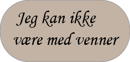

Nei! Har en eller begge foreldrene dine blitt syke! Ikke bekymre deg for vi kan hjelpe dem, litt!
Når foreldrene dine er syke, er det viktigste at de får nok hvile, og mye vann. Så dette er vår sjanse til å spille et spill, der du spiller de voksne mens de er syke barn. Du kan hjelpe dem! Du kan du gå på kjøkkenet og finne dem glass og litt vann. Og du kan hjelpe dem til å føle seg komfortabel og tappe dem inn i teppet. Og mest av alt! Få dem til å føle seg elsket, slik som om de elsker deg.
Men det viktigste er at vi må være forsiktige med å ikke bli syke selv. Så vi kan ikke gi de syke like mange klemmer eller kyss som vi pleier. Og hver gang du rører ved dem eller et eller annet sted, de har rørt, bør du gå og vaske hendene.
Husk alltid selv om foreldrene dine er syke, de vil alltid bry seg om deg og elske deg.
Hvis du er stor nok, kan du til og med hjelpe dem med å lage litt enkel mat. Mat gir oss energi og for å bli frisk raskere trenger de mye hvile, vann og mat. Men hvis du ikke er stor nok til å lage mat, gjør du bare det du kan for dem. Det er det viktigste, det du kan gjøre!

Hva vil du lære om nå?


